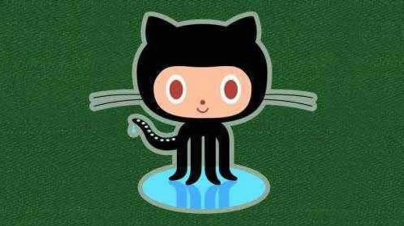
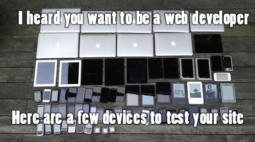
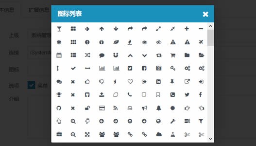

本项目是一个公共css库。
包含了常用的基础样式。您可直接使用里面声明的class样式。

开放源代码
发布在 GitHub 上，方便大家使用这一框架构建更好的web应用，也欢迎大家一起改进。

一个框架、多种设备
你的网站和应用适应各种浏览器(包括IE6)。在平板电脑和智能手机上面还有 响应式CSS 可以使用。
丰富的功能
支持传统盒型和标准盒型，不再为box-sizing烦恼。还有12列的响应式栅格结构和丰富的组件。
简单易学
类的命名方式都是采用广大开发者普遍使用的名称，如果学习过bootstrap，可以很快地上手。

丰富的图标
包含了大量的常用图标。有FontAwesome字体图标，和svg彩色图标，分别使用在多种场景。

持续更新
本项目还会不断吸取优秀CSS方案，出新组件，学习还有很长的路要走，在不断进步中。